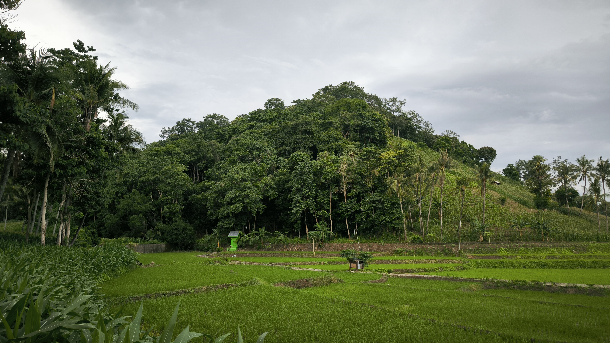
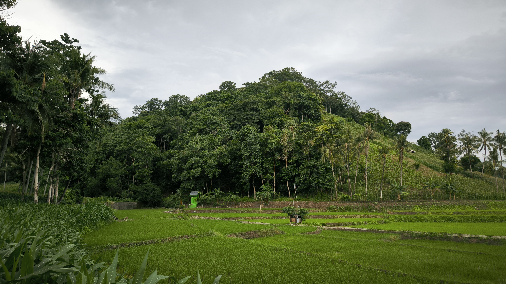
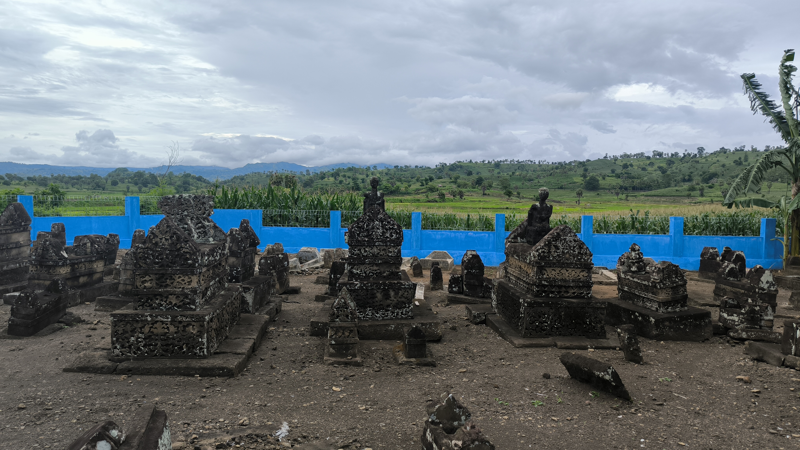
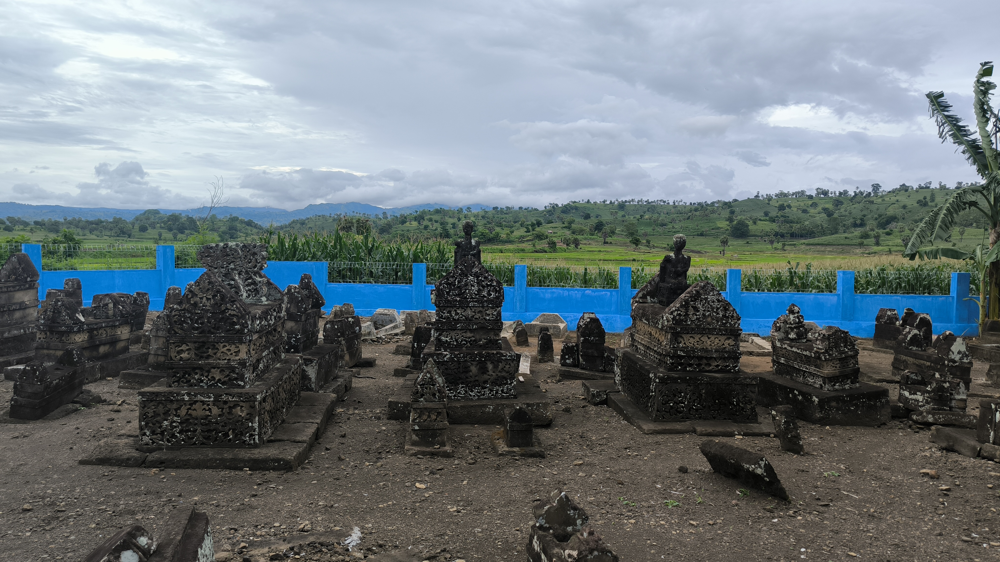
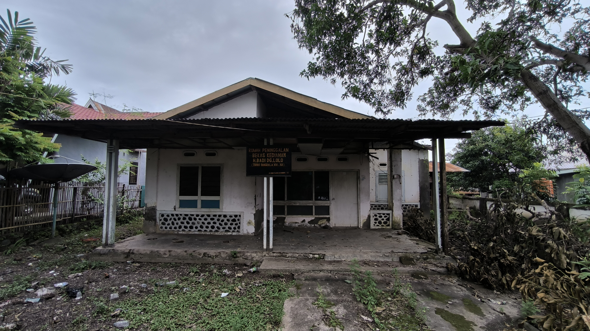
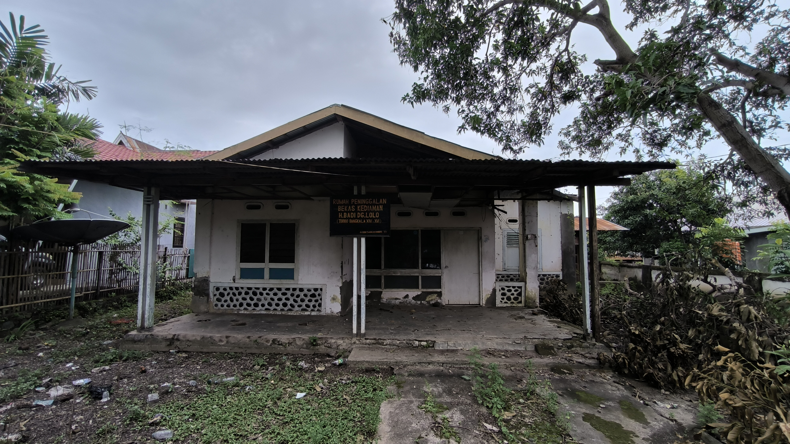

Kelurahan Tellumpanua
Kabupaten Pinrang
Kabupaten Pinrang
Mengenal Lebih Jauh Potensi Kelurahan Tellumpanua
Hutan Mattatakang adalah salah satu kawasan hutan bersejarah yang terletak di perbukitan bagian utara Desa Bangkalaloe, Kecamatan Bontoramba, Jeneponto, Sulawesi Selatan. Kawasan ini dikenal sebagai "Karollea" oleh masyarakat setempat dan memiliki nilai historis serta budaya yang tinggi. Pada masa praislam Karollea adalah pusat kegiatan upacara ritual pemujaan (anismisme-dinamisme) sehingga masih dikeramatkan
Hutan ini juga kaya akan keanekaragaman hayati. Pada Juli 2024, sekelompok peneliti dari KKN Jurusan Kehutanan Universitas Gadjah Mada (UGM) Yogyakarta secara tidak sengaja menemukan jenis pohon langka di Hutan Mattatakang. Pohon tersebut berasal dari spesies Gyrocarpus americanus, yang umumnya ditemukan di Amerika Latin, Nusa Tenggara, dan Jawa. Penemuan ini menunjukkan potensi besar Hutan Mattatakang sebagai kawasan konservasi flora langka.
 



Batu Leppa berarti batu flat yang datar atau pipih. Diperkirakan terbentuk oleh pembekuan cairan magma pada periode pleistosen. Batuleppa yang berada di ketinggian merupakan titik untuk melihat view kampung dari atas, sehingga cocok untuk kegiatan wisata alam
Batu Leppa terletak di Dusun Linrungloe, Desa Bangkalaloe, Kabupaten Jeneponto, Sulawesi Selatan. Tempat ini menawarkan keindahan alam yang asri, dikelilingi oleh perkebunan yang subur. Pengunjung dapat menikmati suasana alam yang tenang dan udara yang segar, menjadikannya tempat ideal untuk melepas penat dari kesibukan sehari-hari.
Untuk mencapai Batu Leppa, pengunjung dapat menempuh perjalanan dari pusat Kota Jeneponto dengan kendaraan pribadi atau transportasi umum. Akses jalan menuju lokasi cukup baik, namun disarankan untuk menggunakan kendaraan yang sesuai dengan medan. Sebelum berkunjung, sebaiknya mempersiapkan perbekalan yang cukup, mengingat fasilitas di sekitar lokasi mungkin terbatas.
Sungai yang berjarak sekitar 5 km ini membentang dari sisi timur laut Desa Bangkalaloe hingga sebelah selatan Desa Bangkalaloe.
Para Leluhur To'do Bangkalaloe
Rumah Adat Desa
Sejarah Desa Bangkalaloe
Kompleks Makam Kuno Joko merupakan situs purbakala dari zaman megalitikum atau zaman batu besar. Tempat pemakaman para Toddo Bangkalaloe dan keluarganya yang kini menjadi cagar budaya. Makam ini terletak di Dusun Joko, Desa Bangkalaloe


 



 

To'do Bangkalaloe bermula pada masa Manangga memegang jabatan pemerintahan yang disebut sebagai "ketua" (Daeng Toa)m pada era itu pula hutan mattatakang terjadi perseteruan untuk mendapatkan burung emas oleh empat daerah pionir/To'do Appaka (Layu, Lentu, Batujala, Bangkalaloe).
.Akhirnya untuk mengatasi kemungkinan-kemungkinan sengketa yang parah, maka ide pembentukan raja / kerajaan binamu dicetuskan. Saat itu lahirnya istilah "Toddo" sebagai dewam adat yang menetaplan dan melantik raja. Manangga adalah Toddo bangkalaloe I.

Tersebar Di Seluruh Penjuru Desa Bangkalaloe

Tersebar Di Seluruh Penjuru Desa Bangkalaloe
Bawang merah adalah salah satu komoditas penting yang banyak digunakan dalam masakan Indonesia.
Cabai memberikan rasa pedas yang khas dan merupakan bahan utama dalam banyak hidangan.
Gula merah adalah pemanis alami yang sering digunakan dalam berbagai resep tradisional.
Website profil kelurahan merupakan situs web yang memuat informasi dasar mengenai kelurahan, sejarah, visi dan misi kelurahan, sampai dengan peta wilayah kelurahan.
Website ini dibuat oleh mahasiswa KKN Universitas Hasanuddin Gelombang 114 Kelurahan Tellumpanua pada Agustus 2025.
Situs web profil dibuat tujuan promosi dan publisitas Kelurahan Tellumpanua agar lebih dikenal oleh khalayak ramai, baik di dalam maupun di luar Kelurahan Tellumpanua.

© 2025 Kelurahan Tellumpanua - All rights reserved